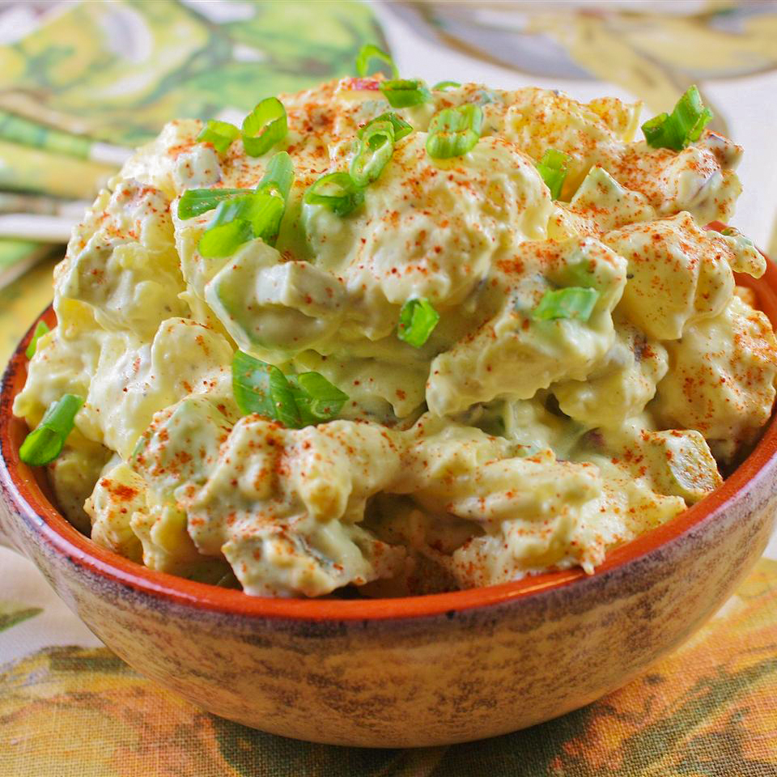

Potato Salad

Description
Quick and easy potato salad recipe with a lot of old-fashioned potato salad flavor. This will become a go-to summer side dish recipe. Better if made the day before.
Ingredients
- 5 pounds red potatoes, chopped
- 3 cups mayonnaise
- 2 cups finely chopped pickles
- 5 hard-cooked eggs, chopped
- ½ cup chopped red onion
- ½ cup chopped celery
- 3 tablespoons prepared mustard
- 1 tablespoon apple cider vinegar
- 1 teaspoon salt, or to taste
- ½ teaspoon ground black pepper
Steps
- Place potatoes into a large pot and cover with salted water; bring to a boil.
- Reduce heat to medium-low and simmer until tender, about 10 minutes.
- Drain
- Return potatoes to empty pot to dry while you mix the dressing.
- Sprinkle with salt.
- Stir mayonnaise, pickles, hard-cooked eggs, red onion, celery, mustard, cider vinegar, 1 teaspoon salt, and pepper together in a large bowl.
- Fold potatoes into the mayonnaise mixture.
- Allow to chill at least six hours, or overnight, before serving.
Return to Main Page